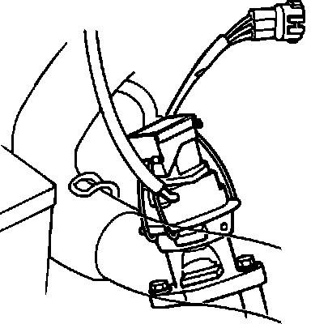
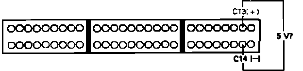
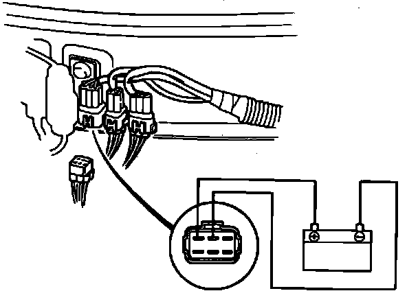

DTC 12
Code 12 indicates a malfunction in the EGR system.1. Remove Alternator Sense fuse in underhood relay box for 10 seconds to reset ECU.
2. Test drive vehicle and then observe diagnostic LED.
Flashes 12, proceed to step 4.
Does not flash, proceed to next step.
3. Malfunction is intermittent. Check connections at EGR lift sensor and ECU. End of test.
EGR Lift Sensor Testing:

4. With ignition off, disconnect EGR lift position sensor connector.
5. Turn ignition on and check for voltage across YEL/WHT and GRN/WHT wires on harness connector.
Approx. 5 volts, proceed to step 9.
Not approx. 5 volts, proceed to next step.
EGR Circuit Testing:

6. With ignition off, install test harness between ECU and harness connector. If test harness is not available, carefully backprobe wires at ECU connector.
7. Turn ignition on and check for voltage between ECU terminals C13 and C14.
Approx. 5 volts, proceed to next step.
Not approx. 5 volts, replace electronic control unit. End of test.
8. Repair open in YEL/WHT or GRN/WHT wire(s) between ECU terminals C13, C14 and EGR lift sensor. End of test.
9. Measure resistance across YEL/WHT and GRN/WHT sensor terminals.
Approx. 4.5 k ohms, proceed to next step.
Not approx. 4.5 k ohms, replace EGR lift sensor. End of test.
10. Check resistance across YEL/WHT and WHT/GRN sensor terminals.
Approx. 3.7 k ohms, proceed to step 12.
Not approx. 3.7 k ohms, proceed to next step.
11. Remove EGR valve and insure the valve is in full closed position. If valve checks good, replace EGR lift sensor. End of test.
12. Connect vacuum pump to EGR valve nipple.
13. Apply 20 in.Hg vacuum to EGR valve and check resistance across YEL/WHT and WHT/GRN terminals.
Approx. 950 ohms, proceed to step 15.
Not approx. 950 ohms, proceed to next step.
14. Remove EGR valve and insure the valve achieves full open position with vacuum applied. If valve checks OK, replace EGR lift sensor. End of test.
15. Check for continuity of WHT/GRN wire between lift position sensor and ECU terminal C8.
Continuity, proceed to step 17.
No continuity, proceed to next step.
16. Repair open in WHT/GRN wire between lift position sensor and ECU terminal C8. End of test.
17. Connect vacuum gauge to line #11 at EGR valve.
EGR Solenoid Connector Identification:

18. With connector apart, connect battery voltage to BLK/YEL solenoid wire and ground to RED solenoid wire.
19. Start engine and check for vacuum at line #11.
Approx. 8 in.Hg vacuum within 1 second, proceed to next step.
Not approx. 8 in.Hg within 1 second, replace EGR solenoid. End of test.
20. Check for voltage at BLK/YEL terminal with ignition on.
Battery voltage, proceed to step 22.
Not battery voltage, proceed to next step.
21. Check fuse #9 in under dash fuse box. If fuse check OK, repair open BLK/YEL wire between solenoid and fuse box. End of test.
22. Check for continuity of RED wire between ECU terminal A10 and solenoid.
Continuity, end of test.
No continuity, proceed to next step.
23. Repair open RED wire between ECU terminal A10 and solenoid.